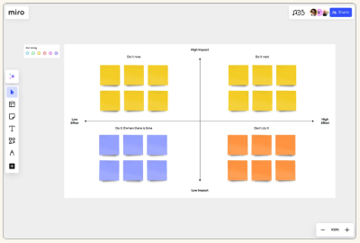
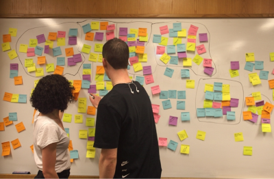
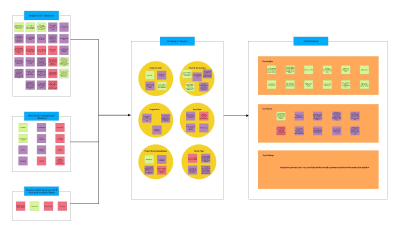
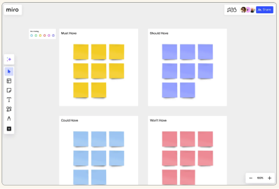
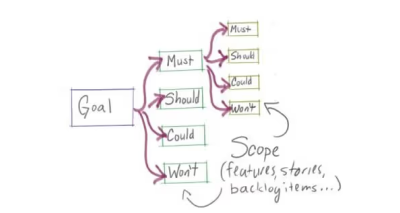
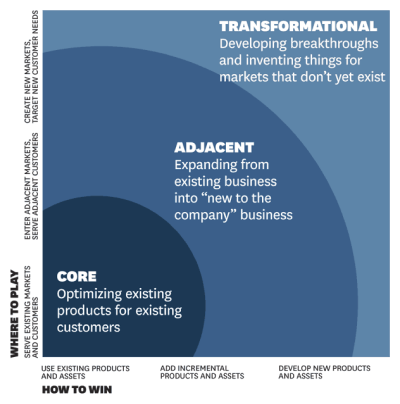

Prioritisation
PLAY: Rapidly Calculate and Recalculate Your Design Team Priorities

A simple matrix-like tool to simultaneously focus on eliminating and reducing the activities that aren’t producing the results you need so that you can raise and create the activities that are or will.
Impact effort matrix

If it's not clear which feature(s) from the backlog should be prioritized, an Impact Effort exercise can help highlight the biggest wins for the least effort.
Prototyping the path: how Slack builds product with customer love
Great talk in general about Slack's product principles. Jump to 30:24 specifically for the section on Utility Curves to learn how long to maintain focus on a priority feature and when to move on.
KJ Method

Often used in project management as a group process for setting priorities. It quickly helps to come to objective group agreement from the series of subjective data.
Ideation: KJ Technique

The technique is like a hybrid between convergent and divergent thinking. It also opens a means for participants to check, iterate, and generate new ideas.
MoSCoW

The MoSCoW method is a powerful technique for tracking priorities, which are categorized and placed in a matrix model.
Making your life easier with the MoSCoW

If you're stuck trying to move a project forward because it seems like there are too many things to concentrate on, then the MoSCoW method may help you.
Innovation ambition matrix
Mostly discussed in terms of a business strategy methodology but can also be applied to design. At a product design level, you can use it to identify the level of ambition needed for each feature to be successful. Only a few features on any project are likely to need to be transformational. This process helps identify them and prioritise where the most effort goes.
What is the ambition matrix and how does it work as part of an innovation portfolio?

Originally developed by the strategy consultants at Monitor (now part of Deloitte) and made famous by a breakthrough article in Harvard Business Review by Geoff Tuff and Bansi Nagji, the Ambition Matrix is a tool which helps companies identify ways to execute their strategy around where to play and how to win.